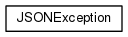
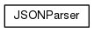
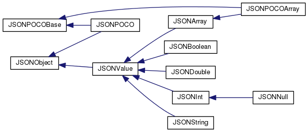
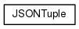

libjson
C++ JSON Library
Page principale
Classes
Fichiers
Liste des classes
Index des classes
Hiérarchie des classes
Membres de classe
Tout
Classes
Fonctions
Énumérations
Hiérarchie des classes
Aller à la hiérarchie des classes en mode texte




Généré le Mercredi 16 Mai 2018 22:22:18 pour libjson par
1.8.7
 1.8.7
1.8.7